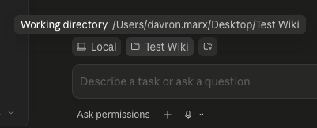
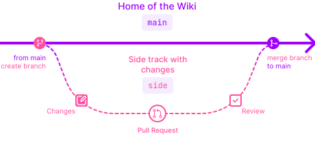

A friendly walkthrough for setting up an AI-powered knowledge base with Claude Code, and for collaborating on it with your team. No terminal. No coding.
In about ten minutes you'll have an AI-powered wiki running on your computer — even if you've never installed a developer tool before.
If you don't already have it, download the Claude Code desktop app from claude.com/claude-code. It's free, installs in under a minute, and works on Mac and Windows.
Sign in once you've launched it — that's the only account you need for this whole section.
Git is a small, free tool Claude Code needs to download skills. The first time you open Claude Code it usually says Git is missing — so let's install it now.
Windows — go to git-scm.com/install/windows, click Download, then run the file and click through the installer. The defaults are fine.
Mac — open the Terminal app (press Cmd + Space, type Terminal, hit Enter), then paste this line and press Enter:
A window pops up — click Install and let it finish. Then reopen Claude Code and the "Git is missing" warning will be gone.
Pick a spot on your computer — your Desktop is fine. Create a new folder and name it whatever you want: My Wiki, Gardening Notes, Work Knowledge Base.
That folder is the home of your wiki. Everything will live inside it.
Launch the Claude Code desktop app and open the folder you just created. You should now see an empty project with a chat box ready to go.

Paste this prompt into Claude Code:
.claude/skills/wiki-generator/ so the skill only applies to this project. Once it's installed, list the skills so I can confirm it's ready to use.
Don't worry about the technical words inside — just paste the whole block as-is. Claude handles the rest.
If Claude asks for permission, just Always Allow. You only need to do this once per wiki.
In Claude Code, type:
/wiki-generatorIf Claude doesn't recognize it, start a new session in the same folder and type it again. A skills folder created during a session loads in the next one.
Claude will create three folders for you:
raw/ — where you drop source files (articles, notes, research)wiki/ — where the polished knowledge base livesoutput/ — where reports and query results show upIt also installs three companion skills inside your wiki folder: /raw-compile, /audit-wiki and /update-wiki. Each wiki keeps its own copies, so updating one wiki leaves the others as they are.
When it's done, start a new session in the same folder before your first compile. Claude Code reads the wiki's CLAUDE.md only when a session starts.
A skill is a small package of instructions that teaches Claude how to do a specific job. You install it once, then trigger it by name with a slash command — like /wiki-generator above.
Think of it as a shortcut for a complex task: instead of writing out detailed instructions every time, you say the skill name and Claude follows the recipe.
raw/This is where you feed your wiki. Open the raw/ folder and drop in any files you want included: articles, notes, research clippings, transcripts, PDFs, images, PowerPoint decks, Word documents and Excel spreadsheets.
Optional: install the free LibreOffice. When it's installed, Claude renders each slide and page of a deck or document and reads the pictures and charts on it. Claude reports anything in a file it couldn't open.
Add as many files as you want. Don't worry about organizing them — that's Claude's job.
In Claude Code, simply say:
compileClaude will read every file in raw/, group the files by topic, write clean wiki articles into wiki/, link them together with [[wiki links]], and archive the compiled raw files so you know what's been processed.
Sit back — this part is automatic.
Once your wiki is built, check it for gaps or inconsistencies. In Claude Code, say:
auditClaude will scan the wiki and produce a numbered audit report in output/_audits/. The report points out missing cross-links, thin topics, and inconsistencies between articles.
The audit is report-only by default — it won't change anything until you say so.
The compile and audit rules improve over time. Your wiki carries its own copy of them, so it runs whatever version it was built with until you refresh it. In Claude Code, say:
updateClaude checks the version your wiki is on against the latest published one, shows you what changed since then, and asks before writing anything. It only ever rewrites four files: CLAUDE.md and the three skills. Your articles, your raw sources and your audit reports are never touched.
The new compile and audit rules apply right away. If the update rewrote CLAUDE.md, start a new session in the folder, because Claude Code reads that file only when a session starts. update tells you when this applies.
update
Wikis built before this feature existed have no /update-wiki skill to run. Paste this into Claude Code once, from inside your wiki folder:
After that one paste, the skill keeps itself current along with everything else.
Earlier versions could install the skills once for every project, in your home folder's ~/.claude/skills/. Claude Code runs those copies ahead of each wiki's own, so updates inside a wiki never reached them.
Say update inside the wiki, then say it once more after it finishes. The second run offers to move the global copies into a backup folder. If it reports "up to date" while the global copies are still there, do it by hand:
.claude/skills/ folder, say update, twice if needed, until that wiki has its own copies.~/.claude/, create a backup folder, for example wiki-skills-backup plus today's date, and move raw-compile, audit-wiki, update-wiki and .wiki-version from ~/.claude/skills/ into it. Renaming them inside skills/ leaves them active.update.raw/ whenever you have it, run compile to pull it in, and audit when you want a sanity check on what you've built.
| Action | What to say |
|---|---|
| Set up a new wiki | /wiki-generator |
| Compile new files | compile |
| Audit the wiki | audit |
| Update the wiki's rules | update |
| Ask a question | Just ask in plain English |
Everything so far runs in the desktop app — buttons, chat box, no terminal. The CLI is the same Claude Code in a terminal window, where it can also run commands and install tools for you. It's an optional power-up, not a requirement.
CLI stands for command-line interface. Instead of clicking buttons, you type a short line into a black window called a terminal, press Enter, and the program responds — right there in text. That's the whole idea: you type, it does the thing.
Claude Code has a CLI version. You open a terminal, type claude, and you're chatting with the same assistant you already know — just in text, and with a few extra powers.
The Claude Code CLI in a terminal — the orange Claude mascot and version at the top, and an input box where you type. Describe what you want in plain English and press Enter, just like the desktop app.
The desktop app is the friendly front door — great for reading, chatting, and everything in this guide. The CLI opens one extra door: because it runs in a real terminal, Claude can pick up its Bash tool and actually do things on your computer — run shell commands, install missing programs, and edit files directly.
That's exactly why installing a tool like Git is easier here: instead of downloading an installer by hand the way you did in Section 01, you can just tell the CLI "install git for me" and Claude runs it for you.
| Do this | Reach for |
|---|---|
| Read, click, and browse with no terminal | Desktop app |
Run shell commands (like git) on your computer | CLI |
| Have Claude install a missing tool for you | CLI |
| Plug in extra tools and MCP servers | CLI |
| Everything in this beginner's guide | Either — both are Claude Code |
Same assistant, same account, same wiki folder. The CLI just lets Claude roll up its sleeves.
Pick your computer below, then paste the one line into your terminal and press Enter. It downloads and sets up the CLI for you — no other software to install first.
Open the Terminal app (press Cmd + Space and type Terminal), paste this, press Enter:
Open PowerShell (press Start and type PowerShell), paste this, press Enter:
When it finishes, check it worked by typing:
claude --versionIf you see a version number, you're set.
> claude
'claude' is not recognized
Seeing this? Totally normal, nothing's broken. Close your terminal window, open a fresh one, and type claude again — that's it. Works the same on Mac, Windows, or Linux.
Point your terminal at your wiki folder, then launch Claude Code:
claudeThe first time you run it, Claude opens your browser to log in. Sign in with the same Claude account you already signed in with in Section 01 — nothing new to set up.
Once you're logged in, you're back at the > prompt, working in the exact same wiki folder — just type what you want in plain English, the same way you do in the desktop app.
Claude builds the wiki. Obsidian — a free markdown app — gives you a clickable, searchable, visual way to read it. Same folder. No sync needed.
Claude Code is great for building the wiki — compiling raw files, writing articles, running audits. But it's not designed for browsing what you've built.
Obsidian fills that gap. It's a free markdown reader that natively understands [[wiki links]] — the same link style Claude already writes into every article. That means:
[[link]] in an article and jump to it.Obsidian doesn't change your files. It just reads the same folder Claude is writing to.
Obsidian is free for personal use — no account or sign-up required.
In Obsidian, a "vault" is just a folder full of markdown files. Your wiki folder is already exactly that.
Obsidian scans the folder and shows every markdown file in the left sidebar.
CLAUDE.md, raw/, etc.), or just the wiki/ subfolder if you only want to browse the polished knowledge base. Either works — pick whichever feels less cluttered.Your wiki has a built-in entry point.
wiki/_master-index.md.[[link]] in the table to jump to that topic's index.This is the same path Claude follows when answering questions — now you can walk it yourself.
This is the fun part.
Every article is a node. Every [[link]] between articles becomes an edge. Drag any dot to pull the graph around.
The graph is a quick way to spot orphaned articles (nothing links to them) and clusters (topics that are tightly connected). It's also a nice visual gut-check on how your wiki is growing.
Press Ctrl/Cmd + Shift + F to open the search panel. Type anything — Obsidian searches across every article instantly.
For quick file-name lookups, press Ctrl/Cmd + O and start typing an article name.
You don't have to pick one. They share the same folder.
| Task | Use |
|---|---|
Drop new files into raw/ | Either (Obsidian or Finder) |
| Compile / audit / ask the wiki questions | Claude Code |
| Browse, search, follow links, read articles | Obsidian |
| Edit an article by hand | Either |
A common rhythm:
compile to bring new files into the wiki.audit.Want a small team to build the same wiki together? Use GitHub Desktop as the syncing layer. No terminal, no coding.
work-knowledge-base). Leave the defaults as they are and click Create Repository — this turns your folder into a local Git repo.You now have a synced copy of the wiki on your machine.
The daily rhythm, named for the GitHub Desktop buttons you'll click.
01 — Pull. Open GitHub Desktop → Fetch origin → Pull origin to grab the latest changes from the team.
02 — Work. Open the wiki folder in Claude Code and work as usual — drop files into raw/, say compile, ask the wiki questions.
03 — Push. Back in GitHub Desktop, you'll see your changed files on the left. Type a short summary at the bottom (e.g. "Added onboarding notes"), then click Commit to main → Push origin.
Your team members can now Fetch → Pull to receive your changes.
The "everyone pushes to main" flow above works for small, trusted teams. As your group grows — or when changes need a second pair of eyes before going live — switch to Pull Requests.
Think of a Pull Request (PR) as a draft change proposal. Instead of pushing your edits straight into the shared wiki, you save them on a personal "side track" (a branch) and ask a teammate to review them. Once approved, the change is merged into the main wiki — and everyone else pulls it down as normal.
It's the digital equivalent of "let me show you this before I publish it."

The wiki lives on main. To propose changes safely, you fork a side branch, work on it, open a PR, get reviewed, then merge back.
PRs introduce a split between two roles:
| Role | Who | What they do |
|---|---|---|
| Maintainer | Team lead (1–2 people) | Reviews PRs, approves or requests changes, merges into main, manages access |
| Contributor | Everyone else | Edits the wiki on their own branch, opens a PR, responds to review feedback |
The maintainer is not the only one who can edit the wiki — contributors do all the writing. The maintainer's job is to be the gatekeeper of main, making sure nothing inconsistent or accidental lands in the shared copy.
To require PRs (instead of letting anyone push directly to main):
mainFrom now on, every change — even the maintainer's own — flows through a PR.
1. Start a branch before editing. In GitHub Desktop, click the Current Branch dropdown → New Branch → name it after your change (e.g. add-onboarding-notes) → Create branch.
2. Edit as usual. Open the folder in Claude Code, drop files into raw/, say compile. Your changes are isolated to your branch — main is untouched.
3. Commit and push your branch. Write a commit message → Commit to <your-branch> → Publish branch (first time) or Push origin (after that).
4. Open the Pull Request. GitHub Desktop shows a Create Pull Request banner — click it. A browser tab opens on github.com. Add a short description of what changed and why → Create pull request.
5. Wait for review. Your maintainer gets notified. They'll either:
main and become painful to merge.When a program runs several workstreams in parallel — each with its own wiki — the cross-cutting picture gets lost. A master wiki is an AI-maintained synthesis layer that sits above two or more workstream wikis and surfaces what they share: decisions, dependencies, risks, and the places they quietly disagree.
The master never duplicates a workstream's content. Its only job is to answer the questions no single workstream can see:
Every claim it makes links straight back to the source article in the workstream wiki it came from, so the synthesis stays auditable. The master-wiki-generator skill packages this whole flow. It sets up the master and, by default, a ready-to-use wiki for each workstream inside it. You install it the same way Section 01 installs /wiki-generator.
Each workstream wiki runs its own raw/ → wiki/ → output/ pipeline and sits in master-wiki/raw/, created there by the generator or synced in from its own repository. master-compile reads each workstream's wiki/ plus the cross-workstream files, and writes the synthesis into master-wiki/wiki/, one article per theme.
The master has the same raw/, wiki/, output/ layout as any wiki and answers the same commands (compile, audit, update), through its own master skills. What differs is what lands in raw/:
| What goes in raw/ | Where it lives | Lifecycle |
|---|---|---|
| Cross-workstream files | A loose file in the master's raw/ | Archived after each compile, like any source |
| A whole workstream wiki | raw/<ws-slug>-wiki/ | Stays live and is never archived: created there by the generator, or a synced copy of a wiki kept in its own repository |
The distinction matters. Loose files are one-time source material. Workstream folders are living inputs that change each time a team compiles its own wiki. Program-wide decisions, steering notes, and RFCs that touch multiple teams are the loose files; everything a single team owns stays in that team's wiki.
Two layers, two responsibilities:
| Who | What they do |
|---|---|
| Workstream lead | Opens their workstream's folder in its own Claude Code session and compiles as usual. A workstream wiki kept in its own repository gets synced into the master's raw/ afterwards |
| Master maintainer | Opens the master folder and runs compile. The master reads each workstream's wiki/ and writes the synthesis |
When the maintainer compiles, the master doesn't organize by workstream — it organizes by theme: Risks, Decisions, Dependencies, Timeline, and Open Questions. A reader should be able to open the master and understand the program, not navigate three separate wikis stitched together.
raw/<ws-slug>-wiki/ folders stay live, so re-syncing is a copy, not a merge.compile there can't archive a workstream.Say update in a session opened at the master folder. It pulls the latest master templates, shows what changed, asks before writing anything, and lists the workstream wikis that are behind. Each of those updates with update in a session opened in its own folder, just like a standalone wiki.
A master set up before the 2026-10-02 release needs a one-line prompt first. It's in the master-wiki-generator README, under "If update doesn't do anything".